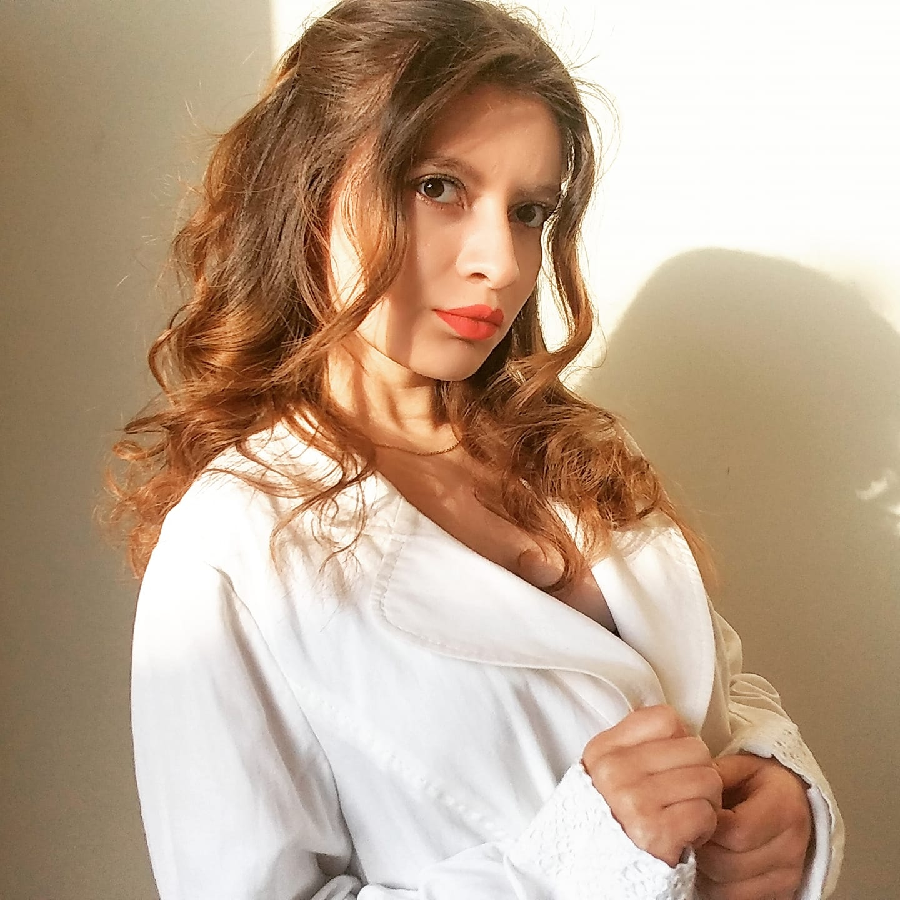
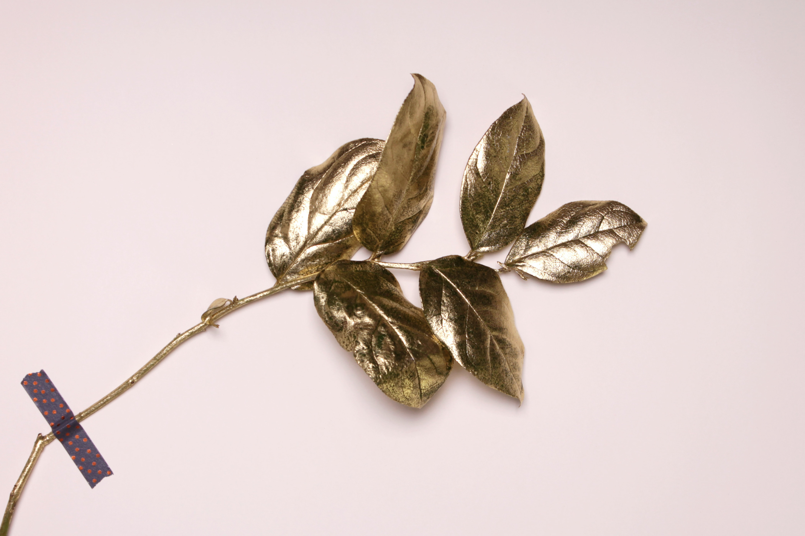

|
 PRESENTACIÓN
|
Soy Bárbara, diseñadora de moda, actualmente cursando el último cilco de mi carrera, mi especialicación es la historia de la moda y el arte. Me encanta pasar tiempo con mis gatos y viajar. |
 PRIMERA DINÁMICA: IMPRESIÓN 3D PRIMERA DINÁMICA: IMPRESIÓN 3D
|
Para la primera clase del curso, tocaron hacer grupos y con el mío se decidió hacer un huevito que salía una especie de niño bebé dinosaurio de él. |
|
 SEGUNDA DINÁMICA: ODS
|
A esta clase no llegué a asistir... Pero pongo fotito aesthetic.
|
 TERCERA DINÁMICA: IDEA ORIGINAL DE PROYECTO TERCERA DINÁMICA: IDEA ORIGINAL DE PROYECTO
|
Mi idea es crear un zapato con suela en impresión 3D intercaamblaeable y el resto del zapato creado con cuero vegetal, para evitar la contaminación y sobre fabricación de calzado. |